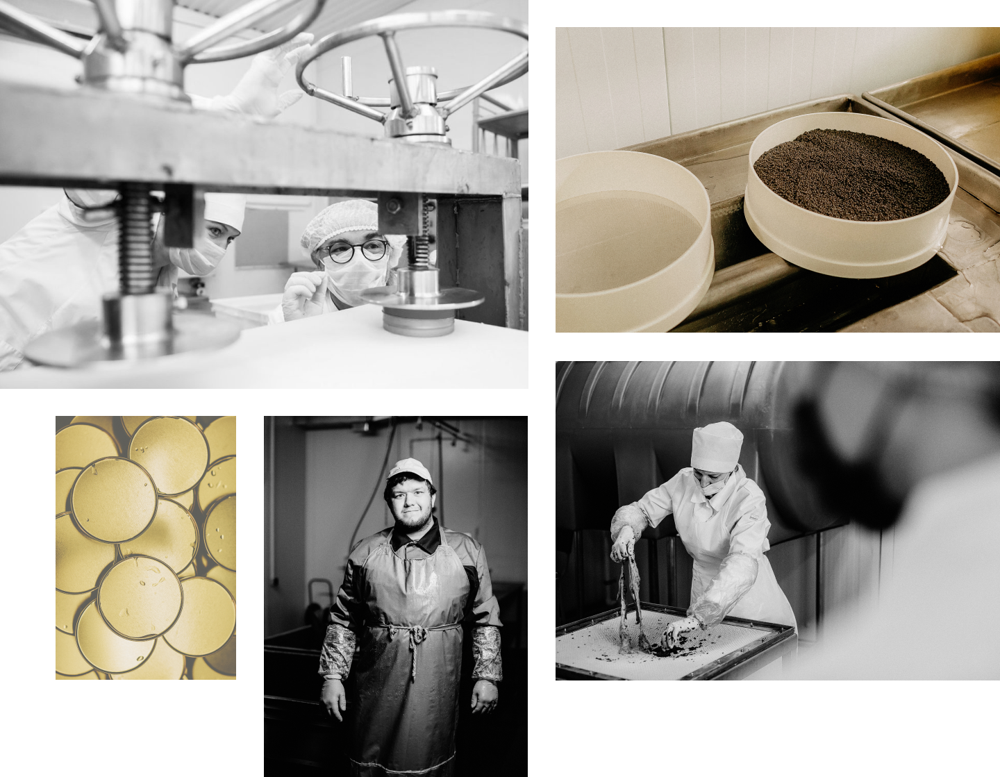
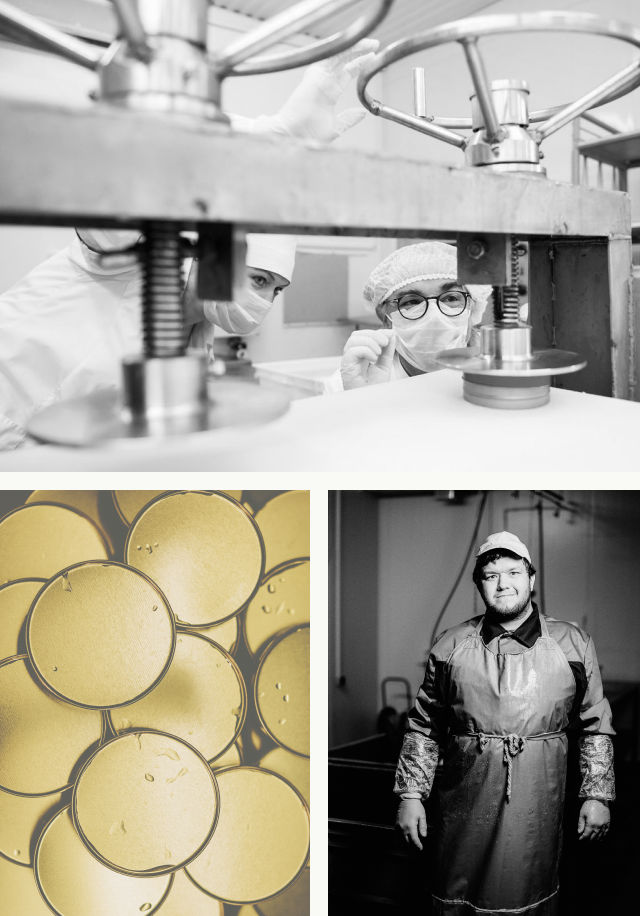

Знаете, как воплотить в реальность свои самые смелые замыслы?
Создать команду мечты, для которой ваше дело будет не работой, а любимым занятием.

Один из самых ярких представителей нашей команды — Марина Новичкова. Сегодня благодаря ее таланту и высокому профессионализму бьется большое сердце нашего производства. Мы гордимся такими сотрудниками и считаем, что никто не расскажет о секретах нашего производства лучше, чем человек, который стоял у его истоков и прошёл большой профессиональный путь длиной в 20 лет.
—
Многие решения принимаются в процессе производства. Значит, вы можете вносить изменения в рецептуры?
—
Мы всегда говорим, что подход у нас современный, а рецепты — исконно астраханские. У нас в цехе работают мастера своего дела, большинство из них — коренные астраханцы. То, что готовили на берегах Волги, мы помним с детства, знаем рецепты ещё от своих мам и бабушек. Но без экспериментов не обойтись. Разумеется, есть ГОСТ, и мы работаем в соответствии с ним, но мы можем вносить свои технические условия, чтобы придать продукции традиционный астраханский вкус.
—
Вы ведёте свою «рекордную» статистику? Например, по количеству полученной за один раз икры или самым крупным икринкам?
—
Да, мы фиксируем все наши производственные факты. По весу наш рекорд - ястык 42 кг, полученный от белуги весом 250 кг Самые крупные икринки тоже были белужьи — 4,5 мм.

—
Для проведения таких экспериментов вы и создали лабораторию?
—
Наличие своей лаборатории позволяет нам отслеживать качество всей продукции. Мы берём анализы с каждой готовой партии. Кроме того, с лабораторией удобно экспериментировать: добавлять какие-то приправы, регулировать посол, высчитывать срок годности. Всё это мы делаем сами.



—
Марина, ваши цехи оснащены мощным современным оборудованием, почему в приоритете производства все равно остается ручной труд?
—
По-другому и не получится. Приготовление икры и рыбы требует постоянного внимания мастера. Многие решения мы принимаем на месте – сколько раз следует промыть икру, на какую переработку лучше направить рыбу, при какой температуре её коптить, сколько по времени солить. Особенно ручной труд нужен в икорном деле — пробивка, промывка, фасовка, — всё это делается вручную. Душа нашего производства — люди, а не технологии, поэтому нам удается столько лет сохранять уникальный вкус всей свой продукции.
—
Помимо собственной лаборатории, в 2018 году «Белуга» запустила новый цех. Какие возможности это даёт производству?
—
Возможности колоссальные. Площадь цеха – 1,5 квадратных километра. Это позволяет нам делать все виды переработки рыбы в одном месте. Икорный цех у нас «живёт» отдельно, ему присвоен свой собственный еврономер. В основном цехе наши мастера перерабатывают осетровые и частиковые виды рыб. Ещё один важный момент – благодаря новому цеху мы смогли войти в реестр предприятий, осуществляющих экспорт икорной и рыбной продукции практически во все страны ближнего и дальнего зарубежья.